We designed an innovative 10-hour Mandarin Bridge Course for 10-12th grade students at Environmental Charter School, Pittsburgh. The course document entails the five phases of instructional design, enabling instructors to follow through with implementing the course
Link: https://drive.google.com/file/d/1yaD1JzUoohTJSxN-WWr-Li6YBC80f4MV/view
Read the Course Design!
Problem
High school Mandarin language learning is challenging: learners do not have an immersive learning environment. Particularly during the transition from level 1 to level 2: students do not practice Mandarin over the summer break, yet they will enter a more challenging course. This often results in:
- Low enrollment rate in advanced Mandarin course
- Learners struggle with the course content
Solution
We designed an innovative 10-hour Bridge Course over the summer break to create an immersive learning environment to prepare learners for the advanced Mandarin course next semester.
With various hands-on practice, learners can see the utility value of learning Mandarin and enhance their language skills, boosting their intrinsic motivation and confidence in continue learning the language.
- 1Backward Design
- 2Learners in Context
- 3Learning Goals
- 4Assessment
- 5Instruction
- 6Final Poster
Backward Design
We employed the Backward Design approach for this course because of its emphasis on alignment:
- We started with identifying the desired outcomes and generating relevant learning goals. Meanwhile, we conducted research to understand our learners' context.
- Next, we created assessments that can align with the desired performance from the learning goals.
- Lastly, we designed an instruction and evaluation plan accordingly.
- At each of the stages, we also received feedback from mentors and iterated the previous design.
This method ensures clarity in learning objectives, enhances student learning by making education more focused, aligns assessments with objectives, and promotes efficient use of time and resources, making it highly effective across various educational settings.
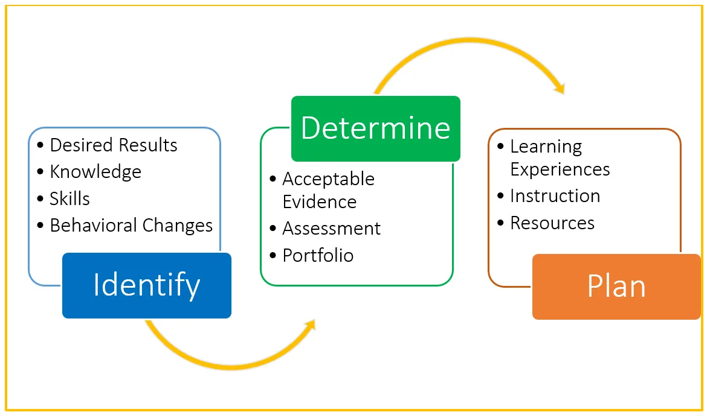
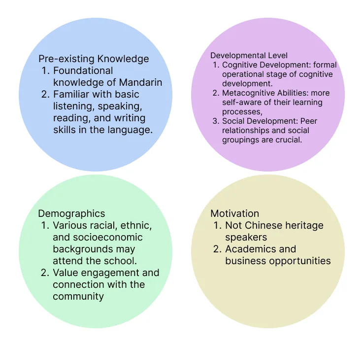
Learners in Context
First, we conducted research from different perspectives to better understand our learners.
- Environmental Charter School's students' demographics
- Mandarin-learning students profile
- High school students' developmental stage
- Prior knowledge associated with Mandarin
Learning Goals
We referred to several established standards to identify learning goals for the Mandarin Bridge Course.
First, we chose Proposed Academic Standards for World Languages by the Pennsylvania Department of Education, the state-level academic standards for world languages. However, considering the nature of a course briding Mandarin 1 and Mandarin 2, we also examined several university-level Mandarin 1 and Mandarin 2 standards, selecting the standards that are coherent and appropriate for high school students.
Based on the standards, we created the goal chart and specifications for each of the goals. Below are excerpts of the goal chart and specifications.
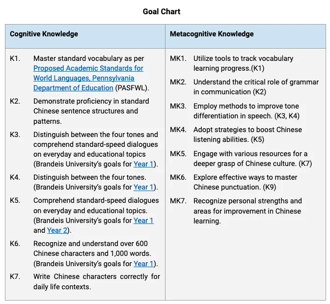
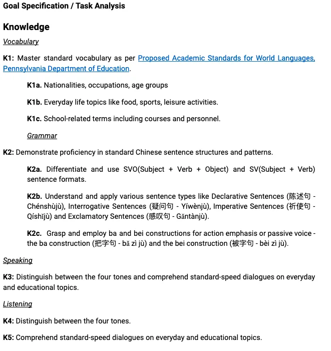
Assessment
After identifying the learning goals for our learners, we created both summative and formative assessments that align with our learning goals. The assessments are carefully designed to be engaging and innovative so that learners can be motivated and become more interested in Mandarin learning.
Some of the innovative assessments include:
- Formative Assignment:Storybook. Every other day, students contribute to this storybook with their creation of stories through reading, writing, listening, and speaking the language.
- Summative Assignment: Group project & Cultural day. Throughout the 10-hour course, students will engage in collaborative teamwork, organized in teams of four members. Following a structured timeline with four milestones, each team will conduct in-depth research on a specific Chinese festival. As a culmination of their efforts, a cultural showcase day will be organized at the end of the semester, providing students with the opportunity to demonstrate and introduce the festival they've studied.
There are also other sources of assessment, such as observations of students’ in-class activities, learning logs, group/individual assessments, and end-of-class self-reflection.
Aligning Assessment with Goals
We meticulously aligned our assessment with all the learning goals. To ensure effective assessment from instructors, we also created detailed instructions for implementation andclear rubrics for instructors to follow.
Below is an example of the Storybook assessment.
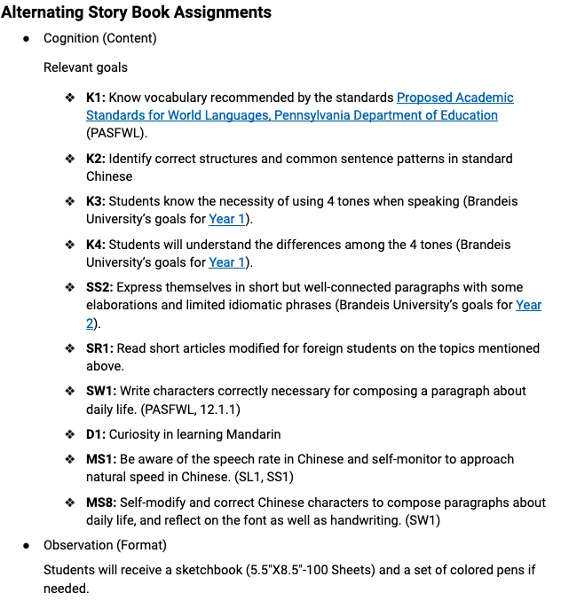
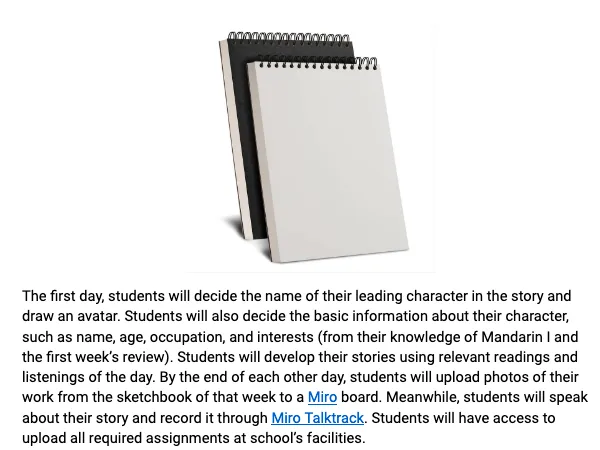
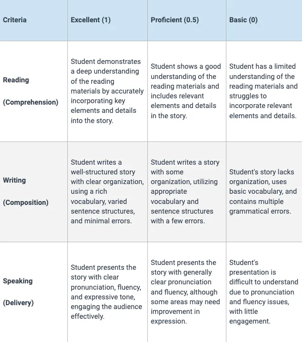
Instruction
We referred to the Understanding by Design framework to design our course units to fit into the Environmental Charter School's programs. Since we had a limit of 10 hours of instruction, we decided to break down the learning content into 3 units, with 3 hours for the first two, and 4 hours for the last one.
To help instructors implement the instruction smoothly, we produced a detailed unit sequence to guide instruction, including daily instructional content and aligned assessment.
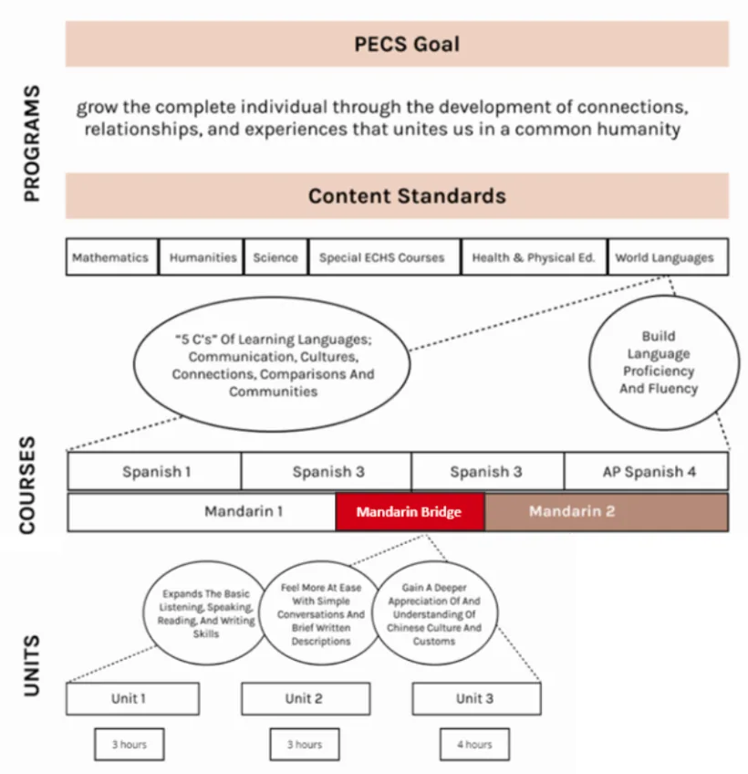
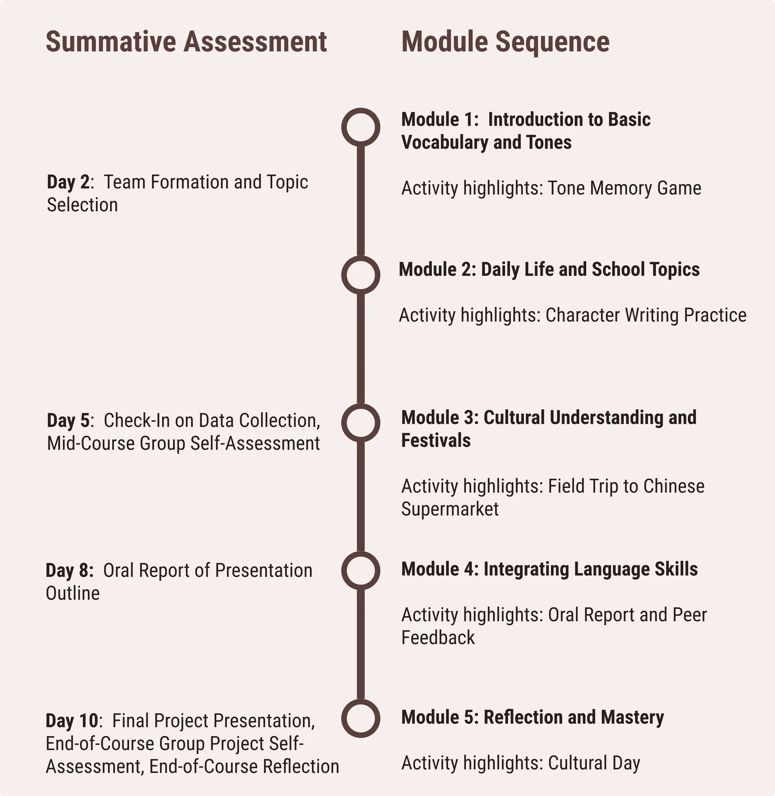
Instruction Highlight - Innovative Activities
We designed a variety of innovative and engaging activities to enhance students' motivation throughout the course, as well as encourage them to practice using the language.
Some of the highlights include Role-Play Games and Supermarket Scavenger Hunt.
Role Play Game Example
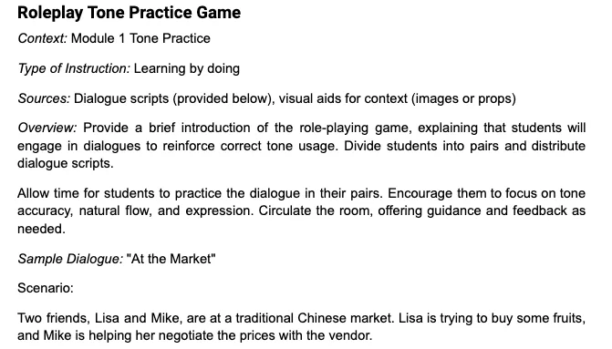
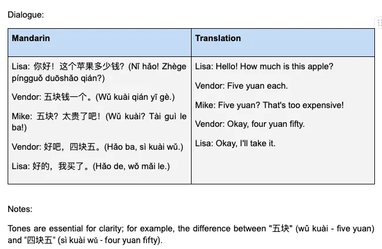
Field Trip: Super Market Scavenger Hunt
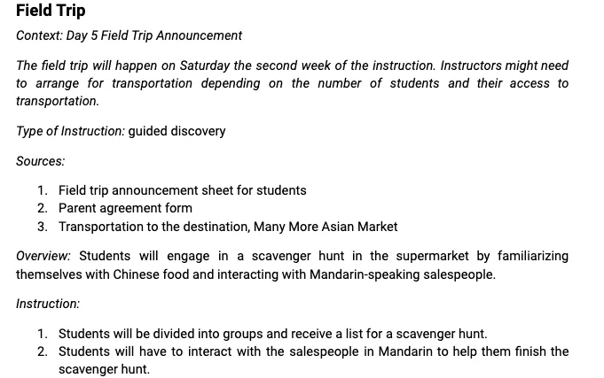
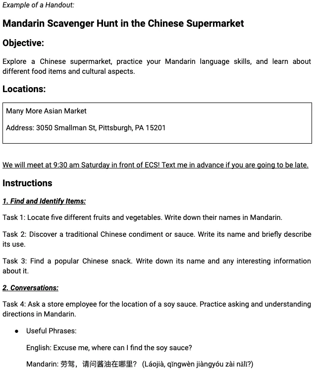
Final Poster
Lastly, we created a poster to present our course design to CMU faculties at our poster session:)
If you're interested, check out the full course design here.
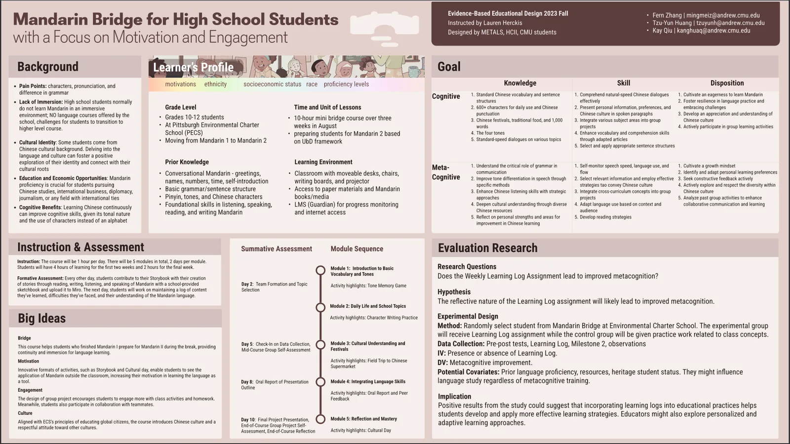